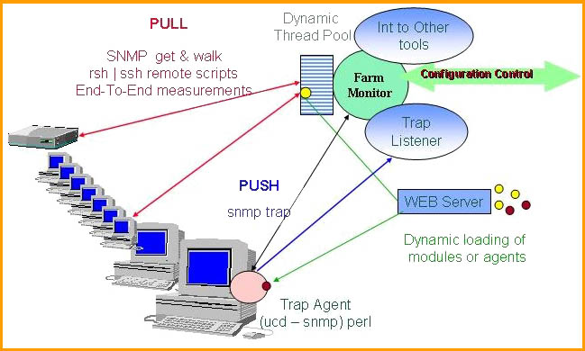
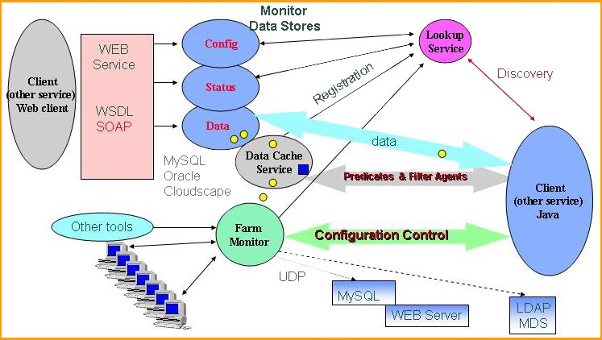

|
|
|
Data Collection The data collection part is based on a multithread engine that performs the procedures to get the requested values. A monitoring module performs a certain task (a SNMP request, runs a script or a performance program) and it can be dynamically loaded into the system and applied to a (set of) system(s) with a defined frequency. Dedicated modules to use parameters collected with other monitoring tools (e.g. Ganglia, MRTG) are controlled by the same multithread engine.  A Monitoring Module is a dynamic loadable unit which executes a procedure (runs a scrip / program or performs SNMP request) to collect a set of parameters (monitored values) by properly parsing the output of the procedure. In general a monitoring unit is a simple class, which is using a certain procedure to obtain a set of parameters and report them in a simple, standard format. Each monitoring module must implement a method that provides the names (identifiers) for the parameters is able to collect. Monitoring Modules can be used for pulling data and in this case it is necessary to execute them with a predefined frequency or to "install" (has to run only once) pushing scripts (programs) which are sending the monitoring results (via SNMP, UDP or TCP/IP) periodically back to the Farm Monitoring module. The execution for these modules is done using a dynamic pool of threads and it controlled by the farm monitoring unit. Allowing to dynamically load these modules from a (few) centralized sites when they ate needed makes much easier to keep large monitoring systems updated and provide new functionalities dynamically. The Farm Monitoring unit is responsible for the configuration and the monitoring of one or several farms. It can dynamically load any monitoring modules from a (set of) http servers or a distributed files system and use them to perform monitoring tasks on each node based on the configuration it receives from a RC Monitor unit. The dynamic pool of threads is used to run the specified monitoring modules on each node. This allows to run concurrently any number of modules and to efficiently use the resources. If performing a monitoring task fails or hangs due to I/O errors, the other tasks are not delayed or disrupted if such a multi-thread scheme is used. A dedicated control thread is used to stop the threads in case of I/O errors and to reschedule these tasks that have not been successfully done. A priority queue is used for the jobs that need to be executed periodically. The Service System Each farm unit may register as a JINI service and / or WSDL service. Clients or other services can get the system configuration and are notified when a change is done. Access to monitor parameters is done using a predicate mechanism. Clients can subscribe with a predicate which may return historical data and / or perform a subscription for the matching values in the future. The monitoring predicates are based on regular expressions for string selection, including configuration parameters (e.g. system names.parameters), conditions for numerical values and time limits. In addition predicates may perform elementary functions like MIN, MAX, average, integral. The predicate matching and the client notification is done in independent threads (one per client IP) under the control of the DataCache unit. Measured values are currently stored into a relational DB using JDBC (InstantDB, MySQL, Postgres , Oralcle ...). The query procedures are adapted to the predicate mechanism for selecting historical data and at the same time to provide active listeners. More complex data processing can be done using Filter Agents. They are "active objects" which may be deployed by a client or an other service to perform a dedicated task using the data collected from a farm unit. It use a predicate to receive the data it needs and may send the computed values back a set of registered units. As an example, a maximum flow path algorithm can be done by such an agent. Agents may perform such tasks without being deployed to a certain service but in this case the Data Cache unit needs to send all the requested values to a remote site. 
JINI extends the Java Platform providing support for Distributed Applications. JINI is a set of Java classes (APIs) and services within a distributed computing framework. The purpose of the JINI architecture is to federate groups of software components into a single, dynamic distributed system. The major features which make JINI technology attractive are:
Web services are software components that can be invoked across a network using XML. They are building blocks for building distributed applications in language, platform and location independent way. A service-oriented architecture implements each part of the a systems as a web service. Simple web services provide low-level features such as access to particular kind of data or to perform a data processing task. Higher-level web services orchestrate lower-level services to provide more complex behaviors, resulting in a pyramid or increasingly specialized processing. Three standards support the implementation of web services:
|